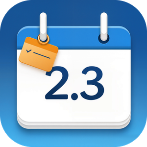

时光随记 AuraCalendar
时光随记,记录点滴。
More than a calendar — capture every moment.
简体中文
时光随记把日历放进 Windows 任务栏,一点即开,不打扰。
- 任务栏日历与时钟:月历、农历与节假日
- 日程:支持重复与提醒,系统通知准时提醒
- 待办:分组管理,截止与完成状态一目了然
- 随记:按日期记录笔记与时间线,支持标签与搜索
- 记账:收支分类、账户、统计图表
- 天气:城市天气预报
- 本地优先:数据保存在本机,无需账号
- 可选云同步:通过你自己的 WebDAV 服务器备份与多设备同步,支持端到端加密
- 支持 11 种语言
English
AuraCalendar puts your calendar right in the Windows taskbar — one click away, never in the way.
- Taskbar calendar and clock with lunar dates and holidays
- Schedule with recurrence and notification reminders
- To-dos with groups, due dates and completion
- Daily notes and timeline with tags and search
- Budget tracking with categories, accounts and charts
- Weather forecast
- Local-first: your data stays on your device, no account required
- Optional cloud sync via your own WebDAV server, with end-to-end encryption
- 11 languages
联系 / Contact
photons.work@outlook.com